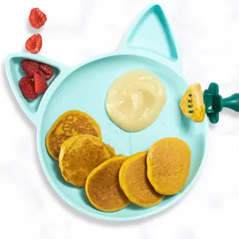

The Pumpkin Pancakes I've Been Making for Years

Ingredients
- 1/2 cup pumpkin puree
- 2 large eggs
- 1/2 cup white whole wheat flour (see notes)
- 2 tsp baking powder
- 1/2 tsp pumpkin pie spice or cinnamon (optional)
- 1/8 tsp salt
- 2-3 tbsp milk, (optional (see notes)
- cooking oil or spray
Steps
- In a medium bowl, whisk together the pumpkin puree and eggs.
- On top of the wet ingredients, add in the flour, baking powder, pumpkin pie spice and salt and gently stir until incorporated. Add in the milk, one tablespoon at a time if needed.
- Heat a large non-stick skillet on medium heat. Spray or oil skillet. For small pancakes add 1 tablespoon of the batter to the skillet at a time and let cook for 3-4 minutes or until golden on the bottom and bubbles appear along the edges. Flip and let cook for another 2-3 minutes. Repeat with all of the batter.
- Serve and enjoy!
Recipe by Baby Foode, from Baby Foode. Saved here for personal use; the original has the full notes, tips and photos. Open original